Let’s start with an example dataset.
library(MouseGastrulationData)
sce <- WTChimeraData(samples=5, type="raw")
sce <- sce[[1]]
sce## class: SingleCellExperiment
## dim: 29453 522554
## metadata(0):
## assays(1): counts
## rownames(29453): ENSMUSG00000051951 ENSMUSG00000089699 ...
## ENSMUSG00000095742 tomato-td
## rowData names(2): ENSEMBL SYMBOL
## colnames(522554): AAACCTGAGAAACCAT AAACCTGAGAAACCGC ...
## TTTGTCATCTTTACGT TTTGTCATCTTTCCTC
## colData names(0):
## reducedDimNames(0):
## mainExpName: NULL
## altExpNames(0):Sections 7.2.1 and 7.2.2 of OSCA advanced.
library(DropletUtils)
bcrank <- barcodeRanks(counts(sce))
# Only showing unique points for plotting speed.
uniq <- !duplicated(bcrank$rank)
plot(bcrank$rank[uniq], bcrank$total[uniq], log="xy",
xlab="Rank", ylab="Total UMI count", cex.lab=1.2)## Warning in xy.coords(x, y, xlabel, ylabel, log): 1 y value <= 0 omitted from
## logarithmic plot
abline(h=metadata(bcrank)$inflection, col="darkgreen", lty=2)
abline(h=metadata(bcrank)$knee, col="dodgerblue", lty=2)
legend("bottomleft", legend=c("Inflection", "Knee"),
col=c("darkgreen", "dodgerblue"), lty=2, cex=1.2)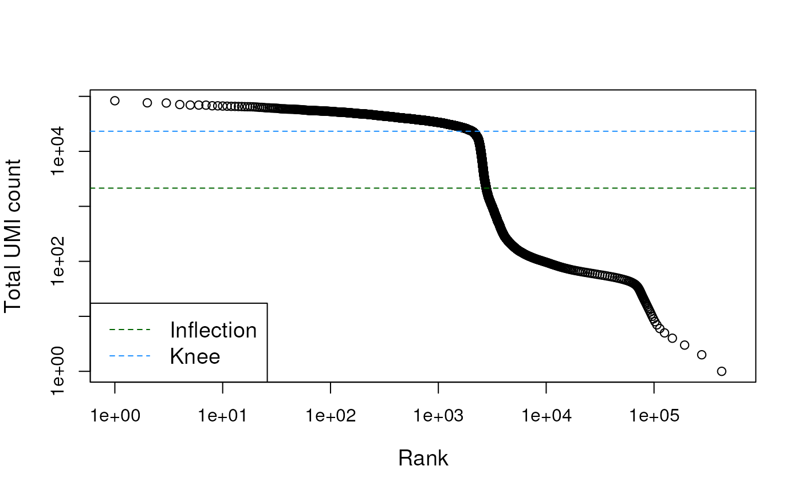
# emptyDrops performs Monte Carlo simulations to compute p-values,
# so we need to set the seed to obtain reproducible results.
set.seed(100)
# this may take a few minutes
e.out <- emptyDrops(counts(sce))
summary(e.out$FDR <= 0.001)## Mode FALSE TRUE NA's
## logical 6184 3131 513239
sce <- sce[,which(e.out$FDR <= 0.001)]
sce## class: SingleCellExperiment
## dim: 29453 3131
## metadata(0):
## assays(1): counts
## rownames(29453): ENSMUSG00000051951 ENSMUSG00000089699 ...
## ENSMUSG00000095742 tomato-td
## rowData names(2): ENSEMBL SYMBOL
## colnames(3131): AAACCTGAGACTGTAA AAACCTGAGATGCCTT ... TTTGTCAGTCTGATTG
## TTTGTCATCTGAGTGT
## colData names(0):
## reducedDimNames(0):
## mainExpName: NULL
## altExpNames(0):Sections 1.2, 1.3.2, 1.4, 1.5 of OSCA basics.
Identify mithocondrial genes.
library(EnsDb.Mmusculus.v79)## Loading required package: ensembldb## Loading required package: GenomicFeatures## Loading required package: AnnotationDbi## Loading required package: AnnotationFilter##
## Attaching package: 'ensembldb'## The following object is masked from 'package:stats':
##
## filter
chr.loc <- mapIds(EnsDb.Mmusculus.v79, keys=rownames(sce),
keytype="GENEID", column="SEQNAME")## Warning: Unable to map 2918 of 29453 requested IDs.
is.mito <- which(chr.loc=="MT")Compute qc metrics.
library(scuttle)
df <- perCellQCMetrics(sce, subsets=list(Mito=is.mito))
# include them in the object
colData(sce) <- cbind(colData(sce), df)
colData(sce)## DataFrame with 3131 rows and 6 columns
## sum detected subsets_Mito_sum subsets_Mito_detected
## <numeric> <numeric> <numeric> <numeric>
## AAACCTGAGACTGTAA 27577 5418 471 10
## AAACCTGAGATGCCTT 29309 5405 679 10
## AAACCTGAGCAGCCTC 28795 5218 480 12
## AAACCTGCATACTCTT 34794 4781 496 12
## AAACCTGGTGGTACAG 262 229 0 0
## ... ... ... ... ...
## TTTGGTTTCGCCATAA 38398 6020 252 12
## TTTGTCACACCCTATC 3013 1451 123 9
## TTTGTCACATTCTCAT 1472 675 599 11
## TTTGTCAGTCTGATTG 361 293 0 0
## TTTGTCATCTGAGTGT 267 233 16 6
## subsets_Mito_percent total
## <numeric> <numeric>
## AAACCTGAGACTGTAA 1.70795 27577
## AAACCTGAGATGCCTT 2.31669 29309
## AAACCTGAGCAGCCTC 1.66696 28795
## AAACCTGCATACTCTT 1.42553 34794
## AAACCTGGTGGTACAG 0.00000 262
## ... ... ...
## TTTGGTTTCGCCATAA 0.656284 38398
## TTTGTCACACCCTATC 4.082310 3013
## TTTGTCACATTCTCAT 40.692935 1472
## TTTGTCAGTCTGATTG 0.000000 361
## TTTGTCATCTGAGTGT 5.992509 267
summary(df$detected)## Min. 1st Qu. Median Mean 3rd Qu. Max.
## 98 4126 5168 4455 5670 7908
summary(df$subsets_Mito_percent)## Min. 1st Qu. Median Mean 3rd Qu. Max.
## 0.000 1.155 1.608 5.079 2.182 66.968
reasons <- perCellQCFilters(df, sub.fields="subsets_Mito_percent")
colSums(as.matrix(reasons))## low_lib_size low_n_features high_subsets_Mito_percent
## 601 654 484
## discard
## 694
summary(reasons$discard)## Mode FALSE TRUE
## logical 2437 694
# include in object
sce$discard <- reasons$discardChecking diagnostic plots.
## Loading required package: ggplot2
plotColData(sce, y = "sum", colour_by = "discard") + ggtitle("Total count")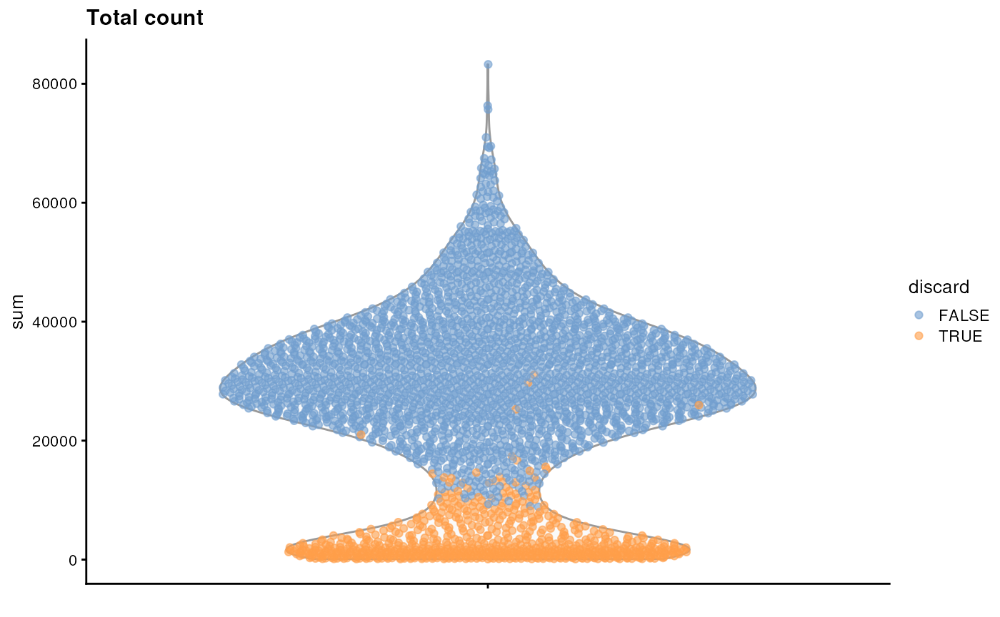
plotColData(sce, y = "detected", colour_by = "discard") + ggtitle("Detected features")
plotColData(sce, y = "subsets_Mito_percent", colour_by = "discard") + ggtitle("Mito percent")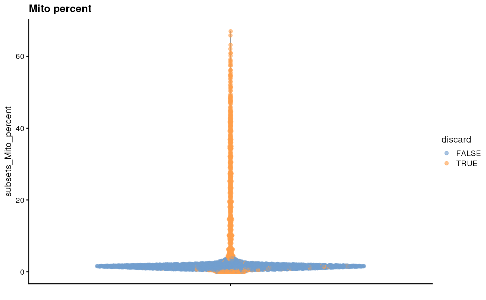
plotColData(sce, x="sum", y="subsets_Mito_percent", colour_by="discard")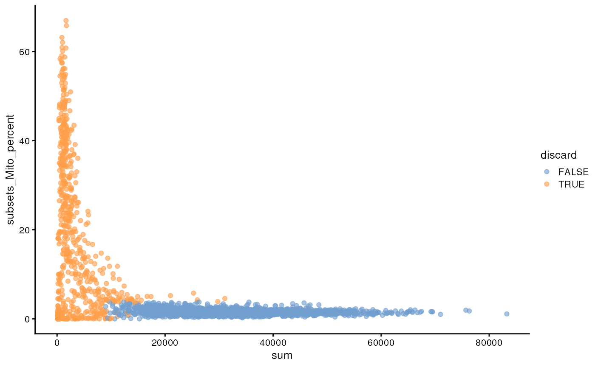
Diagnosing cell type loss (consider removing).
## Loading required package: limma##
## Attaching package: 'limma'## The following object is masked from 'package:scater':
##
## plotMDS## The following object is masked from 'package:BiocGenerics':
##
## plotMA##
## Attaching package: 'edgeR'## The following object is masked from 'package:SingleCellExperiment':
##
## cpm
## Diagnosing cell type loss
lost <- calculateAverage(sce[,reasons$discard])
kept <- calculateAverage(sce[,!reasons$discard])
logged <- edgeR::cpm(cbind(lost, kept), log=TRUE, prior.count=2)
logFC <- logged[,1] - logged[,2]
abundance <- rowMeans(logged)
plot(abundance, logFC, xlab="Average count", ylab="Log-FC (lost/kept)", pch=16)
points(abundance[is.mito], logFC[is.mito], col="dodgerblue", pch=16)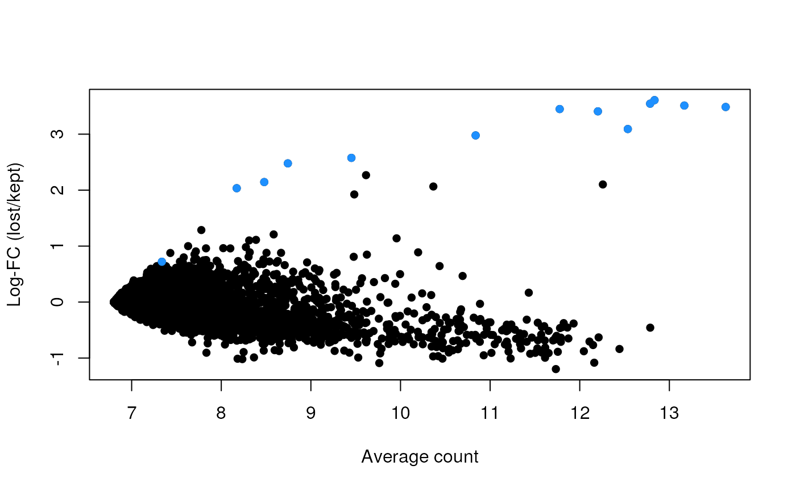
Remove low-quality cells.
sce <- sce[,!sce$discard]
sce## class: SingleCellExperiment
## dim: 29453 2437
## metadata(0):
## assays(1): counts
## rownames(29453): ENSMUSG00000051951 ENSMUSG00000089699 ...
## ENSMUSG00000095742 tomato-td
## rowData names(2): ENSEMBL SYMBOL
## colnames(2437): AAACCTGAGACTGTAA AAACCTGAGATGCCTT ... TTTGGTTTCAGTCAGT
## TTTGGTTTCGCCATAA
## colData names(7): sum detected ... total discard
## reducedDimNames(0):
## mainExpName: NULL
## altExpNames(0):Sections 2.1, 2.2, 2.3, 2.5, of OSCA basics.
Library size factors.
lib.sf <- librarySizeFactors(sce)
summary(lib.sf)## Min. 1st Qu. Median Mean 3rd Qu. Max.
## 0.2730 0.7879 0.9600 1.0000 1.1730 2.5598Normalization by deconvolution.
library(scran)
set.seed(100)
clust <- quickCluster(sce)
table(clust)## clust
## 1 2 3 4 5 6 7 8 9 10 11 12 13
## 273 159 250 122 187 201 154 252 152 169 199 215 104
deconv.sf <- calculateSumFactors(sce, cluster=clust)
summary(deconv.sf)## Min. 1st Qu. Median Mean 3rd Qu. Max.
## 0.3100 0.8028 0.9626 1.0000 1.1736 2.7858
plot(lib.sf, deconv.sf, xlab="Library size factor",
ylab="Deconvolution size factor", log='xy', pch=16,
col=as.integer(clust))
abline(a=0, b=1, col="red")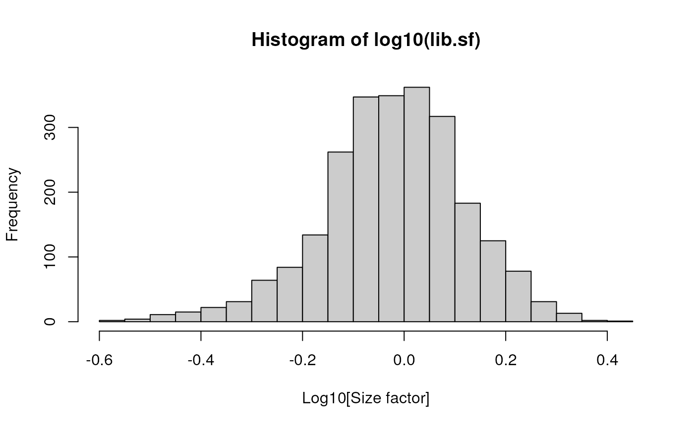
Scaling and log-transforming.
sizeFactors(sce) <- deconv.sf
sce <- logNormCounts(sce)
sce## class: SingleCellExperiment
## dim: 29453 2437
## metadata(0):
## assays(2): counts logcounts
## rownames(29453): ENSMUSG00000051951 ENSMUSG00000089699 ...
## ENSMUSG00000095742 tomato-td
## rowData names(2): ENSEMBL SYMBOL
## colnames(2437): AAACCTGAGACTGTAA AAACCTGAGATGCCTT ... TTTGGTTTCAGTCAGT
## TTTGGTTTCGCCATAA
## colData names(8): sum detected ... discard sizeFactor
## reducedDimNames(0):
## mainExpName: NULL
## altExpNames(0):Sections 3.1, 3.2, 3.5 of OSCA basics.
dec.sce <- modelGeneVar(sce)
fit.sce <- metadata(dec.sce)
plot(fit.sce$mean, fit.sce$var, xlab = "Mean of log-expression",
ylab = "Variance of log-expression")
curve(fit.sce$trend(x), col = "dodgerblue", add = TRUE, lwd = 2)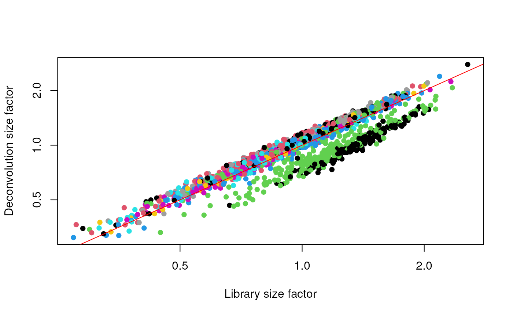
hvg.sce.var <- getTopHVGs(dec.sce, n=1000)
head(hvg.sce.var)## [1] "ENSMUSG00000055609" "ENSMUSG00000052217" "ENSMUSG00000069919"
## [4] "ENSMUSG00000052187" "ENSMUSG00000048583" "ENSMUSG00000051855"All sections of Chapter 4 of OSCA basics.
sce <- runPCA(sce, subset_row=hvg.sce.var)
sce## class: SingleCellExperiment
## dim: 29453 2437
## metadata(0):
## assays(2): counts logcounts
## rownames(29453): ENSMUSG00000051951 ENSMUSG00000089699 ...
## ENSMUSG00000095742 tomato-td
## rowData names(2): ENSEMBL SYMBOL
## colnames(2437): AAACCTGAGACTGTAA AAACCTGAGATGCCTT ... TTTGGTTTCAGTCAGT
## TTTGGTTTCGCCATAA
## colData names(8): sum detected ... discard sizeFactor
## reducedDimNames(1): PCA
## mainExpName: NULL
## altExpNames(0):
plotPCA(sce, colour_by="sum")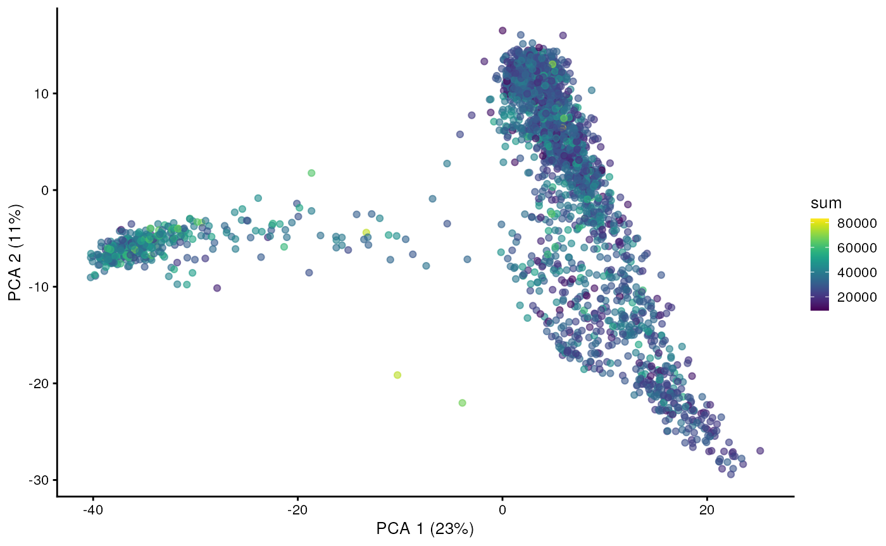
percent.var <- attr(reducedDim(sce), "percentVar")
plot(percent.var, log="y", xlab="PC", ylab="Variance explained (%)")
plotReducedDim(sce, dimred="PCA")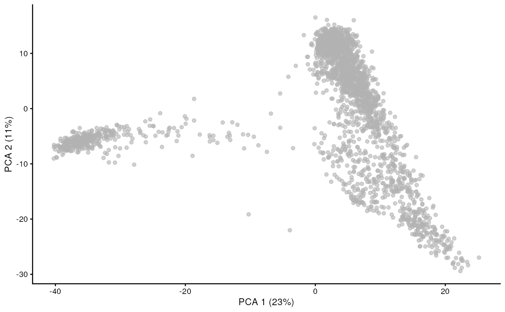
plotReducedDim(sce, dimred="PCA", ncomponents=3)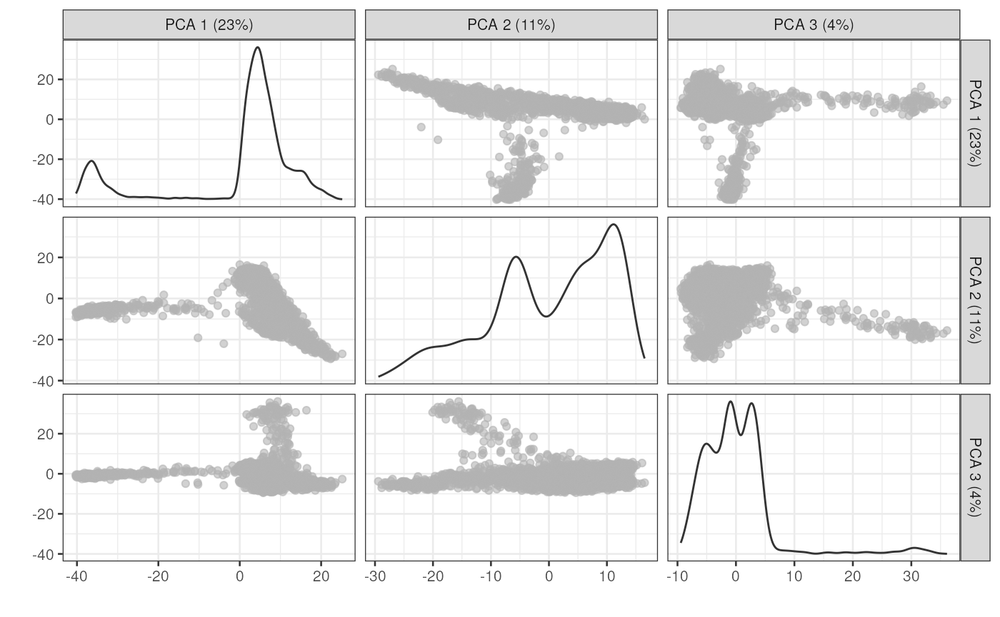
Sections 8.1, 8.3 of OSCA advanced.
library(scDblFinder)
set.seed(100)
dbl.dens <- computeDoubletDensity(sce, subset.row=hvg.sce.var,
d=ncol(reducedDim(sce)))
summary(dbl.dens)## Min. 1st Qu. Median Mean 3rd Qu. Max.
## 0.000000 0.000000 0.000000 0.002014 0.000000 1.886238
sce$DoubletScore <- dbl.dens
plotTSNE(sce, colour_by="DoubletScore")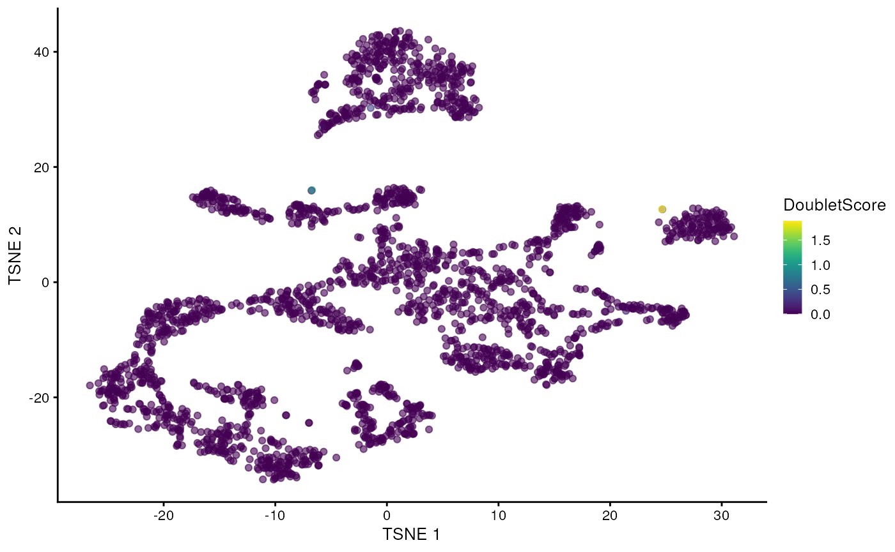
dbl.calls <- doubletThresholding(data.frame(score=dbl.dens),
method="griffiths", returnType="call")
summary(dbl.calls)## singlet doublet
## 2407 30
sce$doublet <- dbl.calls
plotColData(sce, y="DoubletScore", colour_by="doublet")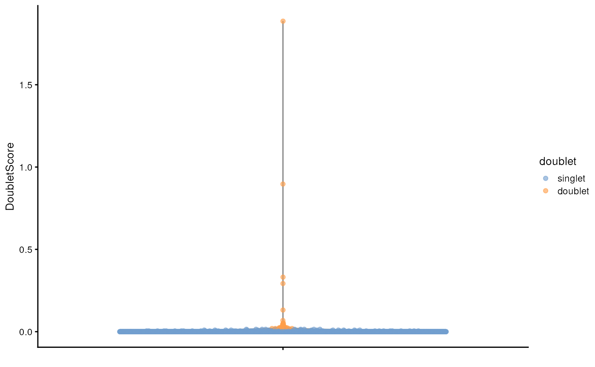
plotTSNE(sce, colour_by="doublet")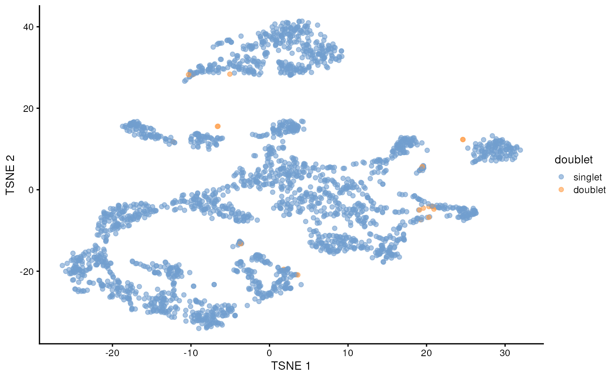
## R version 4.3.0 (2023-04-21)
## Platform: x86_64-pc-linux-gnu (64-bit)
## Running under: Ubuntu 22.04.2 LTS
##
## Matrix products: default
## BLAS: /usr/lib/x86_64-linux-gnu/openblas-pthread/libblas.so.3
## LAPACK: /usr/lib/x86_64-linux-gnu/openblas-pthread/libopenblasp-r0.3.20.so; LAPACK version 3.10.0
##
## locale:
## [1] LC_CTYPE=en_US.UTF-8 LC_NUMERIC=C
## [3] LC_TIME=en_US.UTF-8 LC_COLLATE=en_US.UTF-8
## [5] LC_MONETARY=en_US.UTF-8 LC_MESSAGES=en_US.UTF-8
## [7] LC_PAPER=en_US.UTF-8 LC_NAME=C
## [9] LC_ADDRESS=C LC_TELEPHONE=C
## [11] LC_MEASUREMENT=en_US.UTF-8 LC_IDENTIFICATION=C
##
## time zone: Etc/UTC
## tzcode source: system (glibc)
##
## attached base packages:
## [1] stats4 stats graphics grDevices utils datasets methods
## [8] base
##
## other attached packages:
## [1] scDblFinder_1.14.0 scran_1.28.1
## [3] edgeR_3.42.4 limma_3.56.2
## [5] scater_1.28.0 ggplot2_3.4.2
## [7] scuttle_1.10.1 EnsDb.Mmusculus.v79_2.99.0
## [9] ensembldb_2.24.0 AnnotationFilter_1.24.0
## [11] GenomicFeatures_1.52.1 AnnotationDbi_1.62.1
## [13] DropletUtils_1.20.0 MouseGastrulationData_1.14.0
## [15] SpatialExperiment_1.10.0 SingleCellExperiment_1.22.0
## [17] SummarizedExperiment_1.30.2 Biobase_2.60.0
## [19] GenomicRanges_1.52.0 GenomeInfoDb_1.36.1
## [21] IRanges_2.34.1 S4Vectors_0.38.1
## [23] BiocGenerics_0.46.0 MatrixGenerics_1.12.2
## [25] matrixStats_1.0.0 BiocStyle_2.28.0
##
## loaded via a namespace (and not attached):
## [1] later_1.3.1 BiocIO_1.10.0
## [3] bitops_1.0-7 filelock_1.0.2
## [5] tibble_3.2.1 R.oo_1.25.0
## [7] XML_3.99-0.14 lifecycle_1.0.3
## [9] rprojroot_2.0.3 MASS_7.3-60
## [11] lattice_0.21-8 magrittr_2.0.3
## [13] sass_0.4.6 rmarkdown_2.22
## [15] jquerylib_0.1.4 yaml_2.3.7
## [17] metapod_1.8.0 httpuv_1.6.11
## [19] cowplot_1.1.1 DBI_1.1.3
## [21] zlibbioc_1.46.0 Rtsne_0.16
## [23] purrr_1.0.1 R.utils_2.12.2
## [25] BumpyMatrix_1.8.0 RCurl_1.98-1.12
## [27] rappdirs_0.3.3 GenomeInfoDbData_1.2.10
## [29] ggrepel_0.9.3 irlba_2.3.5.1
## [31] dqrng_0.3.0 pkgdown_2.0.7
## [33] DelayedMatrixStats_1.22.1 codetools_0.2-19
## [35] DelayedArray_0.26.3 xml2_1.3.4
## [37] tidyselect_1.2.0 farver_2.1.1
## [39] ScaledMatrix_1.8.1 viridis_0.6.3
## [41] BiocFileCache_2.8.0 GenomicAlignments_1.36.0
## [43] jsonlite_1.8.7 BiocNeighbors_1.18.0
## [45] ellipsis_0.3.2 systemfonts_1.0.4
## [47] tools_4.3.0 progress_1.2.2
## [49] ragg_1.2.5 Rcpp_1.0.10
## [51] glue_1.6.2 gridExtra_2.3
## [53] xfun_0.39 dplyr_1.1.2
## [55] HDF5Array_1.28.1 withr_2.5.0
## [57] BiocManager_1.30.21 fastmap_1.1.1
## [59] rhdf5filters_1.12.1 bluster_1.10.0
## [61] fansi_1.0.4 digest_0.6.32
## [63] rsvd_1.0.5 R6_2.5.1
## [65] mime_0.12 textshaping_0.3.6
## [67] colorspace_2.1-0 biomaRt_2.56.1
## [69] RSQLite_2.3.1 R.methodsS3_1.8.2
## [71] utf8_1.2.3 generics_0.1.3
## [73] data.table_1.14.8 FNN_1.1.3.2
## [75] rtracklayer_1.60.0 prettyunits_1.1.1
## [77] httr_1.4.6 S4Arrays_1.0.4
## [79] uwot_0.1.16 pkgconfig_2.0.3
## [81] gtable_0.3.3 blob_1.2.4
## [83] XVector_0.40.0 htmltools_0.5.5
## [85] ProtGenerics_1.32.0 scales_1.2.1
## [87] png_0.1-8 knitr_1.43
## [89] rjson_0.2.21 curl_5.0.1
## [91] cachem_1.0.8 rhdf5_2.44.0
## [93] stringr_1.5.0 BiocVersion_3.17.1
## [95] parallel_4.3.0 vipor_0.4.5
## [97] restfulr_0.0.15 desc_1.4.2
## [99] pillar_1.9.0 grid_4.3.0
## [101] vctrs_0.6.3 promises_1.2.0.1
## [103] BiocSingular_1.16.0 dbplyr_2.3.2
## [105] beachmat_2.16.0 cluster_2.1.4
## [107] xtable_1.8-4 beeswarm_0.4.0
## [109] evaluate_0.21 magick_2.7.4
## [111] cli_3.6.1 locfit_1.5-9.8
## [113] compiler_4.3.0 Rsamtools_2.16.0
## [115] rlang_1.1.1 crayon_1.5.2
## [117] labeling_0.4.2 fs_1.6.2
## [119] ggbeeswarm_0.7.2 stringi_1.7.12
## [121] viridisLite_0.4.2 BiocParallel_1.34.2
## [123] munsell_0.5.0 Biostrings_2.68.1
## [125] lazyeval_0.2.2 Matrix_1.5-4.1
## [127] ExperimentHub_2.8.0 hms_1.1.3
## [129] sparseMatrixStats_1.12.1 bit64_4.0.5
## [131] Rhdf5lib_1.22.0 statmod_1.5.0
## [133] KEGGREST_1.40.0 shiny_1.7.4
## [135] interactiveDisplayBase_1.38.0 highr_0.10
## [137] AnnotationHub_3.8.0 igraph_1.5.0
## [139] memoise_2.0.1 bslib_0.5.0
## [141] xgboost_1.7.5.1 bit_4.0.5